UT 5 - Bases de datos
| Resultados de aprendizaje de la unidad didáctica: |
|---|
| RA. 4: Elabora documentos con bases de datos ofimáticas describiendo y aplicando operaciones de manipulación de datos. |
| Criterios de evaluación de la unidad didáctica: |
|---|
| a) Se han identificado los elementos de las bases de datos relacionales. |
| b) Se han creado bases de datos ofimáticas. |
| c) Se han utilizado las tablas de la base de datos (insertar, modificar y eliminar registros). |
| d) Se han utilizado asistentes en la creación de consultas. |
| e) Se han utilizado asistentes en la creación de formularios. |
| f) Se han utilizado asistentes en la creación de informes. |
| g) Se ha realizado búsqueda y filtrado sobre la información almacenada. |
| h) Se han creado y utilizado macros. |
Nota:
El criterio de evaluación b) Se han creado bases de datos ofimáticas, será evaluado durante la FCT.
1 - Introducción
1.1 - ¿Qué es una base de datos?
Una base de datos es un sistema organizado para almacenar, gestionar y consultar información de forma estructurada.
En términos simples, es como un archivo digital inteligente donde los datos (por ejemplo, nombres, productos, precios, usuarios, pedidos, etc.) se guardan de manera ordenada para poder buscar, modificar o eliminar información rápidamente.
Normalmente, las bases de datos se gestionan mediante un Sistema de Gestión de Bases de Datos (SGBD) como:
- MySQL
- PostgreSQL
- Oracle Database
1.2 - ¿Qué es una base de datos relacional?
Para poder almacenar de forma ordenada, toda la información generada por, por ejemplo un negocio, es necesario dividir la base de datos en tablas.
Cada tabla albergará una clase de datos (clientes, pedidos, ventas, stock, ...). Como es fácil de intuir, muchos datos de las diferentes tablas tendrán relación los unos con los otros mediante campos comunes.
En una base de datos relacional, una relación es la conexión lógica entre dos tablas mediante un campo común.
Ejemplo de relación entre tablas
Supongamos dos tablas:
- Clientes (id_cliente, nombre)
- Pedidos (id_pedido, fecha, id_cliente)
El campo id_cliente en la tabla Pedidos conecta con el id_cliente de la tabla Clientes.
→ Esa conexión es la relación existente entre las 2 tablas.
1.3 - ¿Qué es una tabla de una base de datos relacional?
Una tabla es un conjunto de datos organizados en filas y columnas.
Cada fila representa un registro (por ejemplo, un cliente, un pedido, un producto, etc.) y cada columna representa un campo o atributo (por ejemplo, nombre, fecha, precio, etc.).
Una tabla de una base de datos relacional se caracteriza por:
- Tener un nombre que la identifica.
- Contener campos (columnas) que definen los atributos de los datos.
- Contener registros (filas) que representan las instancias de los datos.
- Tener una clave primaria: Es el campo que identifica de forma única un registro de la tabla (por ejemplo, el id_cliente dentro de la tabla Clientes).
- Tener una clave foránea, que es un campo que se utiliza para establecer una relación con otra tabla (por ejemplo, el id_cliente que se repite entre las tablas Clientes y Pedidos).
- Permitir la manipulación de datos mediante operaciones como inserción, actualización, eliminación y consulta.
Ejemplo de tablas en una base de datos.
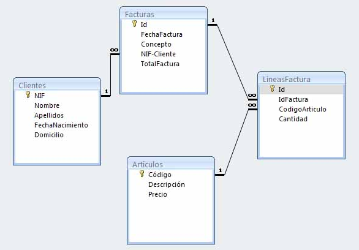
1.4 - LibreOffice Base
¿Qué es LibreOffice Base?
LibreOffice Base es una aplicación de gestión de bases de datos con interfaz gráfica que permite crear, administrar y consultar bases de datos.
¿Cómo funciona LibreOffice Base?
LibreOffice Base puede funcionar de dos maneras:
-
Base de datos embebida utilizando motores internos como HSQLDB y Firebird y actuando como un SGBD ligero de escritorio.
-
Conexión a un servidor externo como MySQL, PostgreSQL, MariaDB y funcionando únicamente como interfaz gráfica, mientras que el SGBD es el servidor externo.
2 - Tarea RA4-CEa Tablas y relaciones entre tablas
2.1 - Parte 1
1 - Creación de una base de datos
- Abrir el asistente de bases de datos de LibreOffice Base y elegir crear una base de datos nueva.
- Después de pulsar siguiente, dejar las opciones por defecto (registrar la BBDD, la hace disponible para todas las aplicaciones de LibreOffice).
- Para finalizar guardar la BBDD con el siguiente nombre: RA4-CEa-NombreApellidos
-
Una vez abierta la BBDD, nos encontraremos con la siguiente interfaz.
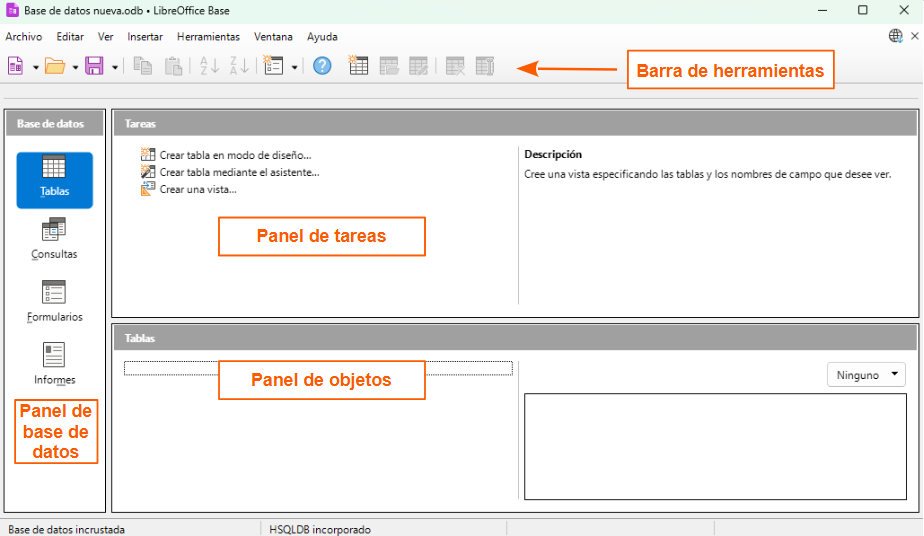
-
Barra de herramientas
Los botones de la barra de herramientas estándar permite acceder a las funciones más habituales de Base:- Abrir, guardar, copiar y pegar, acceder a la ayuda, formularios, botones específicos para tablas, ordenar, etc.
- Panel de base de datos
El panel de base de datos permite seleccionar el tipo de objeto de la Base de datos con el que se quiere trabajar.- En una base de datos de Base hay cuatro tipos principales de objetos: tablas, consultas, formularios e informes.
- Panel de tareas
El panel de tareas permite decidir qué hacer con el objeto seleccionado.
- Por ejemplo, si se selecciona el tipo de objeto "Tablas", el panel de tareas ofrece la posibilidad de crear una tabla nueva, abrir una tabla existente, etc.
- Panel de objetos
En el panel de objetos se muestran los objetos que hay en la base de datos. Esos objetos pueden ser de tipo tablas, consultas, formularios e informes.
- Al estar la BBDD vacía no mostrará nada. De existir objetos, aparecerán de la siguiente manera.
- Objetos de tablas:
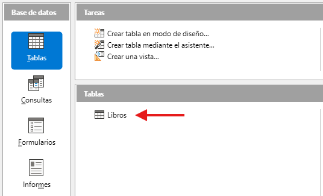
- Objetos de consultas:
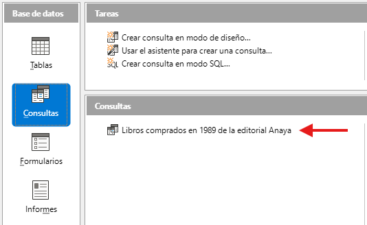
- Objetos de formularios:
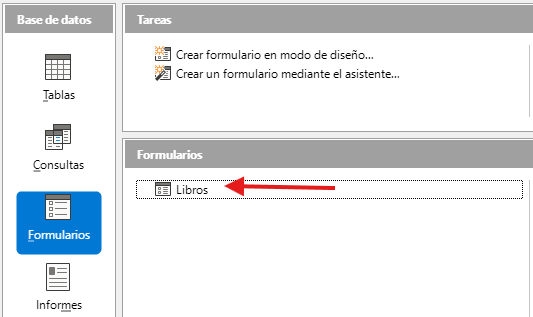
- Objetos de informes:
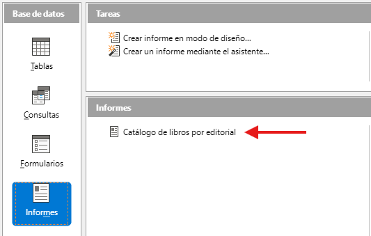
- Objetos de tablas:
- Al estar la BBDD vacía no mostrará nada. De existir objetos, aparecerán de la siguiente manera.
Tablas
En las tablas se almacena la información estructurada de la base de datos. Cada tabla está compuesta por campos (columnas) y registros (filas). Una base de datos suele contener varias tablas relacionadas entre sí.
Formularios
Los formularios permiten introducir, modificar y visualizar datos de las tablas de forma más cómoda y controlada. No almacenan información por sí mismos, sino que actúan como interfaz de acceso a las tablas o consultas.
Consultas
Las consultas permiten obtener información específica de una o varias tablas. Se utilizan para filtrar, ordenar o combinar datos mediante criterios determinados.
Informes
Los informes permiten presentar los datos de forma organizada y lista para imprimir o exportar. Se basan en la información de tablas o consultas y muestran los datos con un formato definido. Cada vez que se ejecutan, reflejan el estado actual de la base de datos.
2.2 - Parte 2
2 - Creación de las tablas en LibreOffice Base
Una tabla de una base de datos es un conjunto de datos organizados en filas y columnas.
Cada fila representa un registro (por ejemplo, un cliente, un pedido, un producto, etc.) y cada columna representa un campo o atributo (por ejemplo, nombre, fecha, precio, etc.).
Campos de una tabla en LibreOffice Base
Al crear una tabla, es necesario definir los campos que formarán parte de la tabla.
El nombre de los campos puede estar formado por un máximo de 64 caracteres alfanuméricos.
Aunque hoy en día los SGBD permiten cualquier carácter, ES MUY ACONSEJABLE seguir las reglas siguientes:
- Por claridad, poner nombres significativos (Apellido, Nombre, Telf, etc.).
- No incluir espacios en blanco dentro de los nombres de campo. Poner un guión bajo
_en su lugar (p.e.: precio_unitario). - No utilizar caracteres especiales como acentos, $, &, @, #, %, Ç, etc.
Ejemplo de campos de una tabla de una base de datos
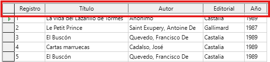
Tipos de datos en LibreOffice Base
En LibreOffice Base, al crear una tabla, es necesario definir el tipo de datos para cada campo. Algunos de los tipos de datos más comunes son:
- Texto: Para almacenar cadenas de caracteres cortas, como nombres o direcciones.
- Nota: Para almacenar textos largos, como descripciones o comentarios.
- Númerico: Para almacenar valores numéricos, como precios o cantidades.
- Fecha/hora: Para almacenar fechas/horas, como fechas de nacimiento o fechas de pedidos o horarios.
- Sí/No (Booleano): Para almacenar valores de Sí/No, verdadero/falso, como si un cliente está activo o no.
- OTHER (Objetos): Para almacenar objetos como archivos o documentos.
- Imagen: Para almacenar imágenes, como fotos de productos o clientes.
- Clave primaria: Para identificar de forma única cada registro en la tabla, como un número de identificación o un código de producto.
Ejemplo de todos los tipos de datos disponibles en LibreOffice Base
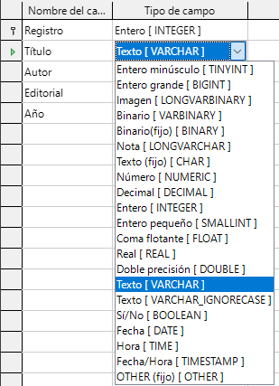
Clave primaria
La clave primaria es un campo único es decir, tiene un valor que no se puede repetir y que identifica de forma única a cada registro de la tabla.
Es muy aconsejable, por no decir obligatorio, que la tabla tenga un campo que sirva como clave primaria ya que, entre otros:
- Garantiza la integridad de entidad.
- Facilita la creación de claves foráneas en otras tablas.
- Mejora el rendimiento en búsquedas e indexación.
- El campo de clave primaria se identifica inmediatamente al tener el símbolo de la clave, como se puede ver a continuación.
Campo identificado como clave primaria
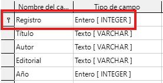
Campo con registros que no se repiten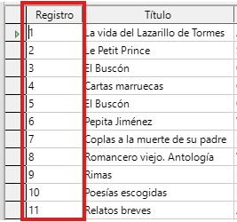
¿Como podemos asegurarnos de que los registros del campo con clave primaria no se puedan repetir?
Trabajo a realizar 1/3
- Descargar todos los contenidos necesarios a la tarea desde el siguiente enlace.
- Abrir el archivo gimnasio.ods y arrastrar las 7 primeras hojas de la hoja de cálculo al campo Tablas de la base de datos.
Cuidado a la hora de definir el campo de clave primaria
Resultado esperado después de importar las diferentes hojas de la hoja de cálculo
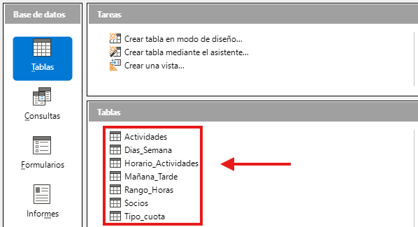
- Campos de la tabla Actividades
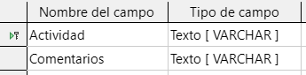
- Campos de la tabla Dias_Semana
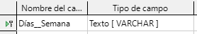
- Campos de la tabla Horario_Actividades
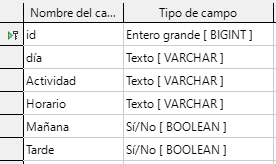
- Campos de la tabla Manaña/Tarde
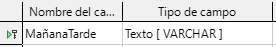
- Campos de la tabla Rango_Horas
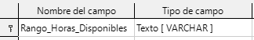
- Campos de la tabla Socios
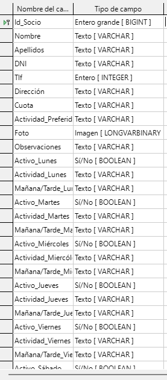
- Campos de la tabla Tipo_Cuota
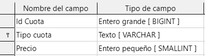
2.3 - Parte 3
3 - Relaciones entre tablas
En una base de datos relacional, una relación es la conexión lógica entre dos tablas mediante un campo común.
Para establecer una relación entre dos tablas, es necesario que ambas tablas tengan un campo con el mismo tipo de datos y que campo se utilice como clave primaria en una tabla y como clave foránea en la otra tabla.
La relación entre las tablas permite realizar consultas que combinan datos de ambas tablas, lo que facilita la obtención de rmación más completa y detallada.
Tipos de relaciones entre tablas en una base de datos
Existen tres tipos básicos de relaciones entre tablas:
-
Uno a muchos (1:N). Este tipo se da cuando una fila de la primera tabla puede estar relacionada con muchas filas de egunda tabla, pero una fila de la segunda solo está relacionada con una de la primera.
En el siguiente ejemplo, vemos como un vendedor con Id única (IdVendedor) de la tabla Vendedores puede aparecer en iples registros de la tabla Ventas (al haber realizado múltiples ventas).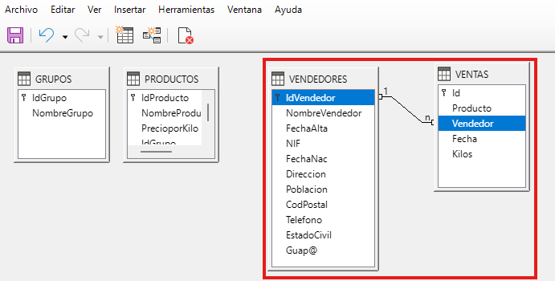
-
Muchos a muchos (N:N). Esta clase de relación ocurre cuando una fila de la primera tabla puede estar relacionada muchas filas de la segunda tabla y una fila de la segunda tabla puede estarlo con muchas filas de la primera.
Un ejemplo de este tipo lo tenemos en la relación entre la tabla Peliculas y la tabla Interpretes porque dada una película puede tener muchos intérpretes y viceversa: dado un intérprete, este puede haber intervenido en muchas películas. -
Uno a uno (1 a 1). Este tipo de relación aparece con menos frecuencia y sucede cuando una fila de la primera tabla puede estar relacionada con una fila de la segunda y una fila de la segunda tabla solo puede estar relacionada con de la primera.
Un ejemplo de este tipo de relaciones podría ser entre una tabla con países y otra con jefes de gobierno, dado que, realmente, un país solo tiene un jefe de gobierno y un jefe de gobierno lo es de un solo país.
Trabajo a realizar 2/3
Preparar las relaciones entre las tablas de la base de datos para ello, ir a:
- Herramientas → Relaciones
- Dentro de la ventana de relaciones pinchar en el icono Añadir tablas.
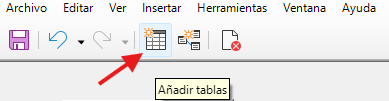
- Añadir todas las tablas disponibles.
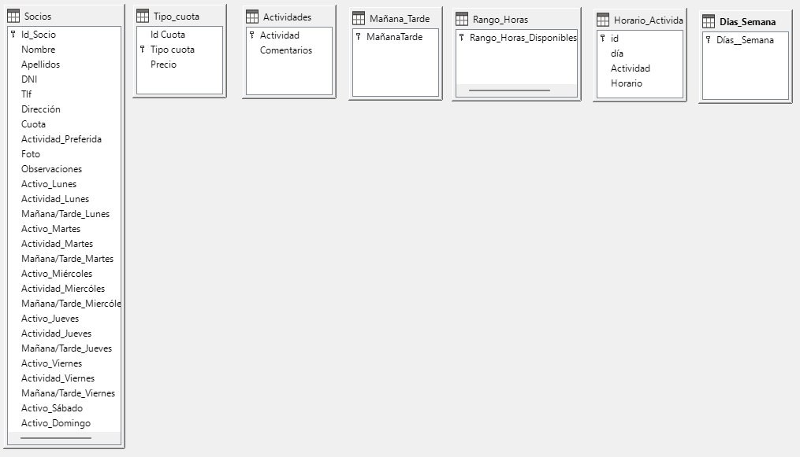
Trabajo a realizar 3/3
- Preparar las relaciones entre las tablas.
¿Qué relaciones entre tablas tenemos en nuestra base de datos?
- Para establecer las relaciones pincheremos en el icono Relación nueva....
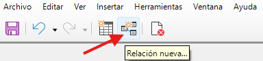
- Rellenaremos los campos para definir la relación entre tablas.
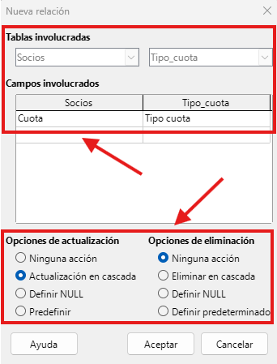
¿A qué corresponden los campos Opciones de actualización y Opciones de eliminación?
- Resultado final después de establecer todas las relaciones entre tablas.
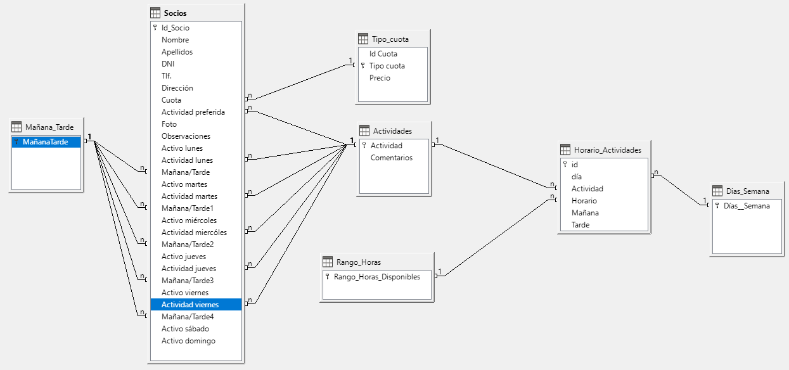
2.3 - Entrega de la tarea
Condiciones de entrega de la tarea
- Guardar el documento con RA4-CEa-NombreApellidos en formato odb, formato nativo de LibreOffice Base.
- No se aceptará ningun formato que no sea odb.
- Subir la base de datos, a la tarea RA4-CEa de Aules.
- A partir de momento de apertura de la tarea, dispondréis de 14 días para subir vuestros trabajos. Pasado ese tiempo la tarea se cerrará y ya no será posible subir vuestros ejercicios.
3 - Tarea RA4-CEce Formularios
Para esta tarea, deberéis recuperar la base de datos creada en la tarea RA4-CEa
3.1 - Parte 1
1 - Formularios
Un formulario es un objeto de base de datos que proporciona una interfaz intuitiva para introducir, modificar y visualizar los datos almacenados en las tablas de nuestra base de datos.
Los formularios están diseñados para simplificar las consultas CRUD (Create, Read, Update, Delete), permitiendo a los usuarios interactuar con la base de datos sin necesidad de trabajar directamente con tablas o consultas SQL.
Ejemplo de interfaz de formulario:
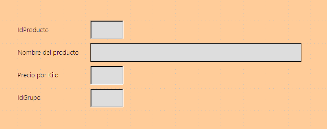
3.2 - Parte 2
2 - Creación de formularios
Elementos fundamentales de un formulario
Un formulario puede contener diversos elementos que facilitan la interacción con los datos.
Algunos de los elementos más comunes son:
- Cuadros de texto: Permiten ingresar o mostrar datos alfanuméricos.
- Cuadros combinados: Ofrecen una lista desplegable de opciones para seleccionar un valor específico.
- Botones de opción: Permiten seleccionar una opción entre varias disponibles.
- Casillas de verificación: Permiten marcar o desmarcar opciones.
- Botones de comando: Permiten ejecutar acciones específicas, como guardar un registro, eliminar un registro o navegar entre registros.
- ... y muchos más.
Ejemplo de formulario
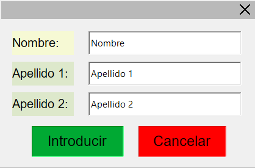
Elementos gráficos de un formulario
Además de los elementos de control, un formulario también puede incluir elementos gráficos para mejorar su apariencia y usabilidad. Algunos ejemplos de elementos gráficos son:
- Etiquetas: Se utilizan para identificar los campos del formulario y proporcionar información adicional al usuario.
- Imágenes: Se pueden incluir imágenes para hacer el formulario más atractivo visualmente o para representar información de manera gráfica.
- Líneas y formas: Se pueden utilizar para organizar visualmente el formulario y separar secciones o grupos de campos relacionados.
- ... y muchos más.
Ejemplo de formulario con elementos gráficos añadidos
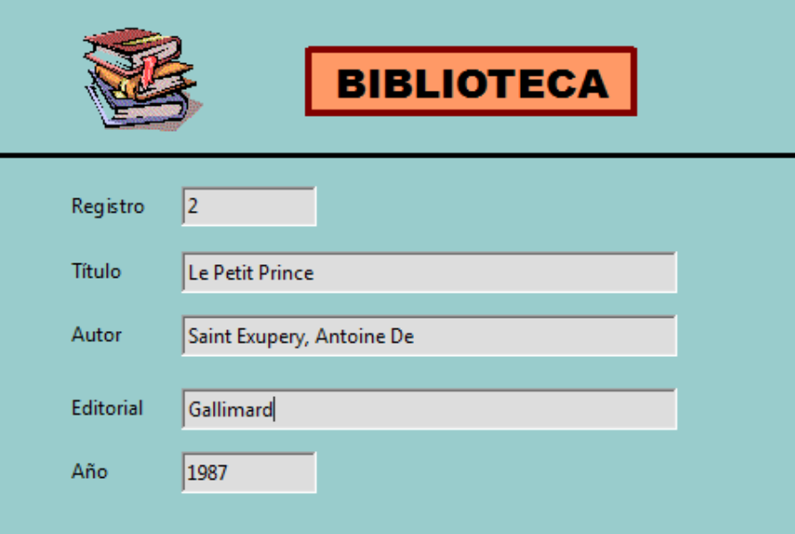
Creación de formularios con el asistente de LibreOffice Base
LibreOffice Base ofrece un asistente para la creación de formularios que guía al usuario a través de los pasos necesarios para diseñar un formulario de manera rápida y sencilla.
- Vamos a Formularios → Crear formulario con asistente....
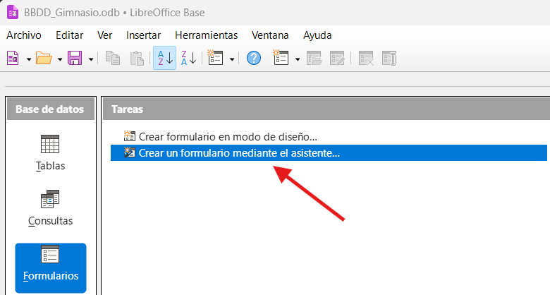
- Elegimos la tabla de la base de datos que usaremos así como los campos que queremos pintar en el formulario.
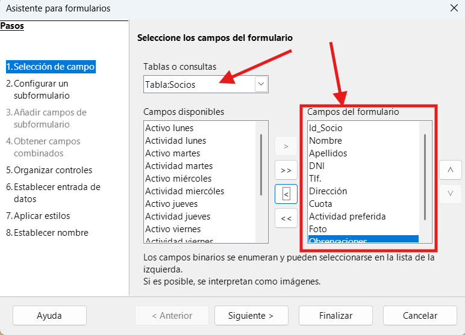
- En el siguientre paso, dejamos las opciones por defecto.
- Organizar controles: Elegimos la disposición de controles dentro de la interfaz que más nos guste.
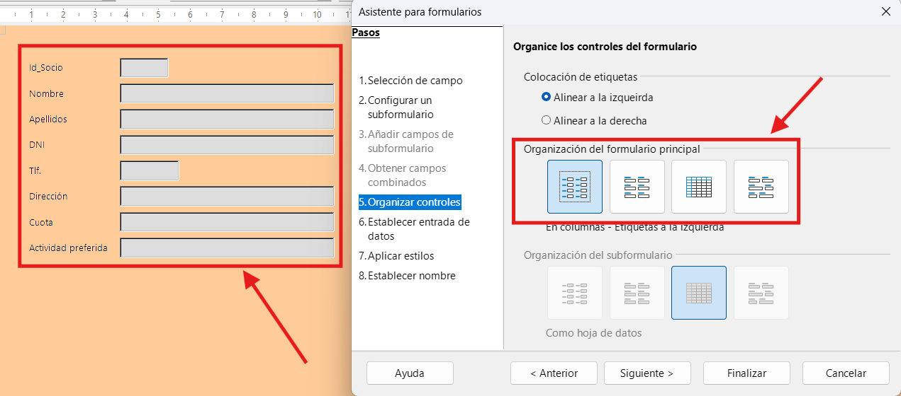
- En Establecer entrada de datos marcaremos si los datos se pueden modificar (insertar, modificar o eliminar).
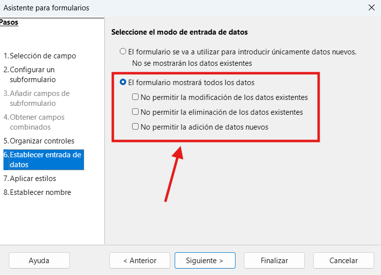
- En Aplicar estilos elegimos el diseño de los campos y el color de fondo.
- Finalemente, damos un nombre al formulario y nos ponemos a trabajar con él para hacerlo plenamente funcional.
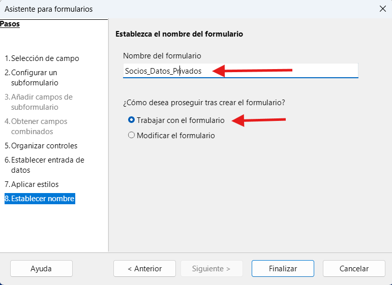
Modificación del formulario creado con el asistente
Como podemos ver, el formulario creado con el asistente no tiene en cuenta que algunos campos están enlazados con otras tablas, por lo que los muestra como cuadros de texto.
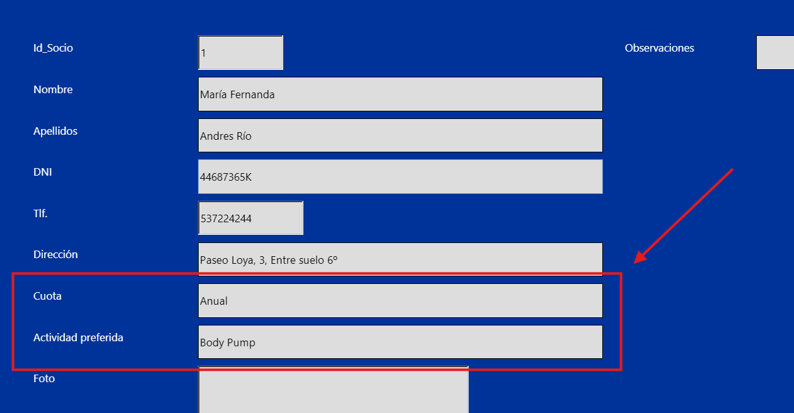
Para que el formulario sea plenamente funcional, es necesario modificarlo para que los campos relacionados con otras tablas se muestren como cuadros combinados.- Selecionamos uno de los campos a modificar, hacemos click derecho, seleccionamos desagrupar y eliminamos el campo.
- En la barra de herramientas de controles, seleccionamos el control Cuadro combinado y lo colocamos en el lugar donde estaba el campo eliminado.
Muy importante
Cuando seleccionamos el control de cuadro combinado, es necesario que el botón de "Alternar asistentes de control de formulario" esté activado. De lo contrario, no aparecerá el asistente para configurar correctamente el cuadro combinado.
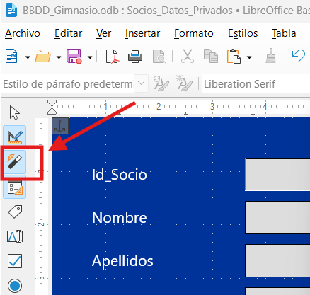
- Una vez abierto el asistente, elegimos la tabla Socios.
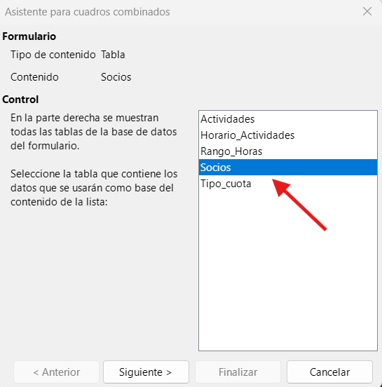
- Luego elegimos el campo que queremos visualizar (Cuota).
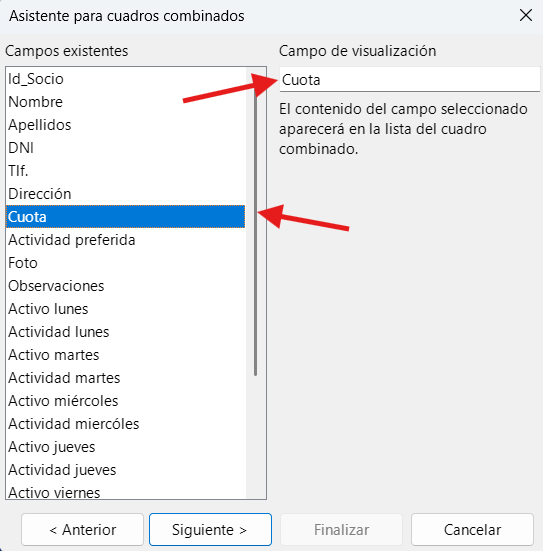
- En campo de base de datos elegimos la opción Sí, al ser un campo que deseamos poder modificar.
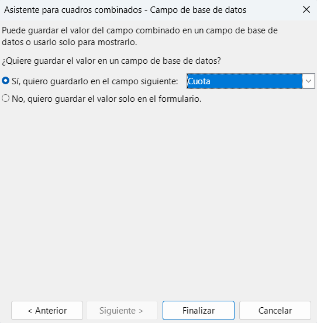
- Si todo ha ido bien, después de finalizar el cuadro combinado debería mostrar los valores de la tabla enlazada (relacionada) Tipo_cuota dentro del formulario. Una vez seleccionada una opción, ese valor se escribirá dentro de la tabla Socios.
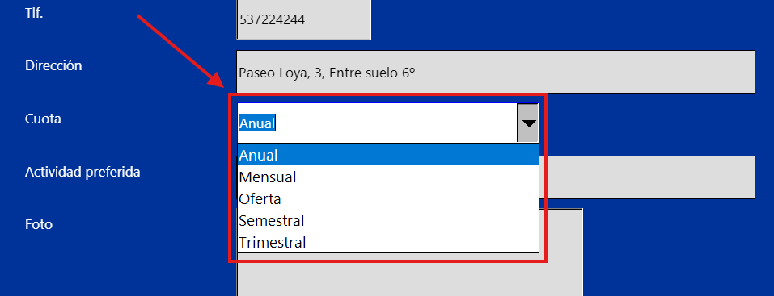
Trabajo a realizar 1/3
- Realizar el formulario explicado más arriba.
- Modificar el campo Actividad preferida para que enlace el valor del campo con los valores de la tabla Actividades.
Trabajo a realizar 2/3 (opcional)
- Mejorar el aspecto visual del formulario (interfaz).
Trabajo a realizar 3/3
El formulario anterior se diseñó para solamente visualizar los datos personales del usuario.
- Crear un formulario que llamaréis Socios_Actividades.
- Ese formulario sirvirá para que cada socio pueda elegir una actividad por día.
- Ejemplo de formulario (los estilos son opcionales).
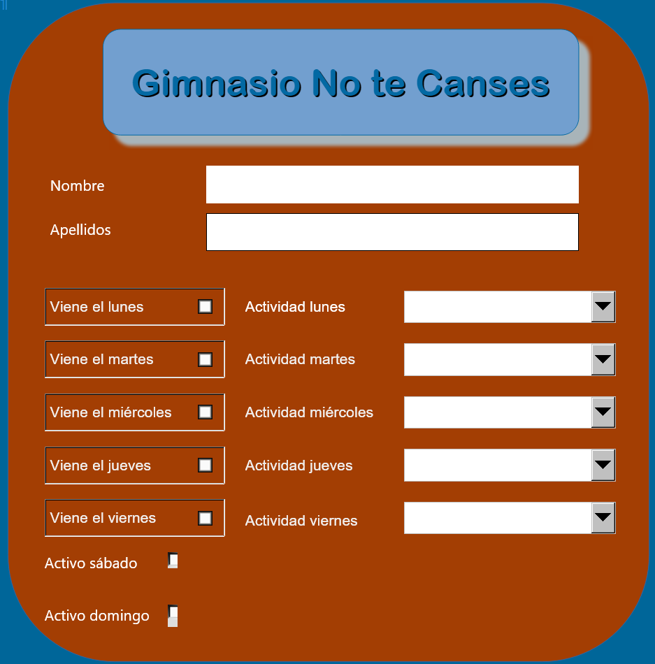
- Los campos Actividad lunes, martes..., domingo deberán reemplazarse por cuadros combinados.
- El formulario deberá ser plenamente funcional es decir, la tabla Socios deberá actualizarse con los nuevos valores elegidos.
3.3 - Entrega de la tarea
Condiciones de entrega de la tarea
- Guardar el documento con RA4-CEce-NombreApellidos en formato odb, formato nativo de LibreOffice Base.
- No se aceptará ningun formato que no sea odb.
- Subir la base de datos, a la tarea RA4-CEce de Aules.
- A partir de momento de apertura de la tarea, dispondréis de 14 días para subir vuestros trabajos. Pasado ese tiempo la tarea se cerrará y ya no será posible subir vuestros ejercicios.
4 - Tarea RA4-CEdg Consultas a la base de datos
Para esta tarea, deberéis recuperar la base de datos creada en la tarea RA4-CEce
Las consultas sirven para recuperar, manipular y analizar los datos almacenados en las tablas de una base de datos. En otras palabras, las consultas permiten obtener información específica de una o varias tablas mediante criterios determinados.
Las consultas son una herramienta fundamental para trabajar con bases de datos, ya que permiten:
- Filtrar la información para recuperar sólo aquellos datos interesantes para cada caso.
- Ordenar la información recuperada utilizando tantos criterios como sean necesarios.
- Utilizar varias tablas para obtener datos combinados de ellas.
En LibreOffice Base, las consultas se pueden realizar de tres maneras distintas: Modo Diseño, con el asistente o utilizando SQL.
4.1 - Introducción a las consultas SQL
Las consultas SQL (Structured Query Language) son una herramienta fundamental en la gestión de bases de datos relacionales. Utilizan un lenguaje de programación específico para interactuar con la base de datos y realizar diversas operaciones, como recuperar, insertar, actualizar o eliminar datos.
Para realizar consultas SQL iremos a Consultas y pulsaremos el enlace de Crear consulta en modo SQL....
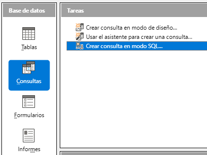
Ejemplo de consulta SQL
En este ejemplo, recuperaremos todos los socios que praticarán ciclo indor el lunes.
Esta consulta selecciona todos los campos de la tabla "Socios" y devuelve una lista y devuelve los valores que cumplen la condición (filtrado) donde el campo Actividad_Lunes='Ciclo indoor'.
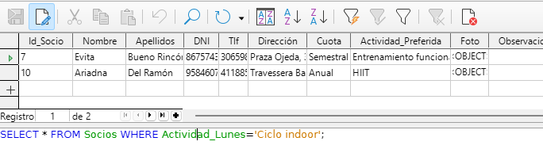
Guardar la consulta como consulta_1.
Trabajo a realizar
Ejercicio 1
Modificar la consulta anterior para que devuelva solamente los nombres y apellidos de los socios que harán body pump el martes.
Guardar la consulta como consulta_2.
Ejercicio 2
Modificar la consulta anterior para que devuelva solamente los nombres y apellidos de los socios que harán body pump el viernes por la tarde y tienen una cuota anual.
Guardar la consulta como consulta_3.
4.2 - Consultas en modo diseño
4.2.1 - Consultas sobre una tabla
Esta vez eligiremos la opción Crear consulta en modo de diseño... y seleccionamos la tabla sobre la cual queremos trabajar (tabla Socios).
Ejemplo de consulta
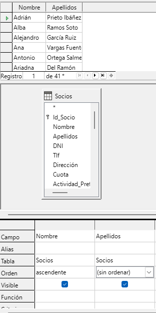
En esta consulta visualizamos los campos Nombre y Apellidos. Además, ordenaremos los resultados por orden alfabético sobre la columna Nombre.Guardar la consulta como consulta_4.
Ejemplo de consulta con un criterio
En esta consulta añadimos un criterio a la consulta anterior para que nos devuelva los valores que cumplan la condición Cuota = Anual.
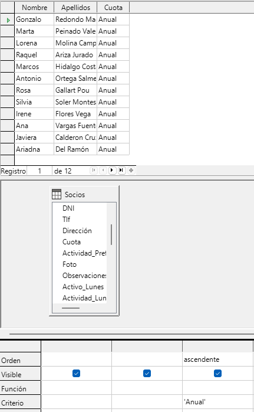
Guardar la consulta como consulta_5.
Trabajo a realizar
Ejercicio 3
Modificar la consulta anterior para que devuelva los registros que cumplan las condiciones Cuota = Anual O Cuota = Mensual.
Guardar la consulta como consulta_6.
Ejercicio 4
Crear una consulta que devuelva la cantidad de registros que cumplan la condición Cuota = Anual. Admeás, se le dará un alias al resultado obtenido. Por ejemplo, Cantidad de socios con cuota anual.
Guardar la consulta como consulta_7.
Ejercicio 5
Crear una consulta que devuelva la cantidad de registros que cumplan las condiciones Cuota = Anual O Trimestral O Mensual.
Guardar la consulta como consulta_8.
Ejercicio 6
Crear una consulta que devuelva todos los registros que cumplan las condiciones Actividad_Miércoles no es nulo.
Guardar la consulta como consulta_9.
4.2.2 - Consultas sobre varias tablas
Cuando una sola tabla no es suficiente para la consulta a realizar, usaremos consultas relacionales (o Joins) sobre varias tablas.
Trabajo realizar
En este ejemplo nos proponemos de recuperar todos los usuarios que harán la actividad entrenamiento funcional el lunes por la mañana y además, saber el horario de dicha actividad.
Ejercicio 7
Para ir entendiendo progresivamente las ventajas (y los peligros) de las consultas relacionales, realizar primero la consulta:
- Usuarios: Nombre y Apellidos
- Actividad: entrenamiento funcional
- Día: lunes
- Franja horaria: mañana
Guardar la consulta como consulta_10.
Ejercicio 8
Revisar las tablas y buscar en qué tabla tenemos la información del horario de las actividades.
Añadir esa tabla a la consulta.
- Crear la consulta para recuperar Nombre, Apellidos de los socios que harán entrenamiento funcional el lunes por la mañana.
- Además la tabla deberá devolver el horario de la actividad entrenamiento funcional.
Ejemplo de resultado: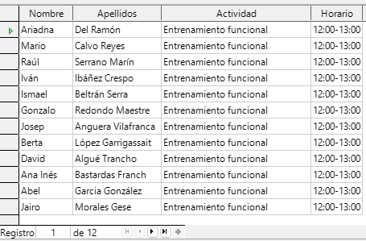
Guardar la consulta como consulta_11.
Ejercicio 9
- Realizar una consulta que devuelva la cantidad total de dinero obtenida de los socios que tienen una cuota mensual.
Ejemplo de resultado: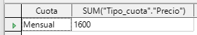
Guardar la consulta como consulta_12.
Ejercicio 10
- Realizar una consulta que devuelva la cantidad total de dinero obtenida de los socios que tienen una cuota mensual y anual.
Ejemplo de resultado: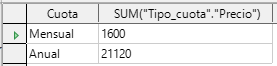
Guardar la consulta como consulta_13.
Ejercicio 11
- Realizar una consulta que devuelva la cantidad total de dinero obtenida de todos los socios.
Guardar la consulta como consulta_14.
Ejercicio 12
- Realizar una consulta que haga lo siguiente: Devuelver id, nombre y apellidos + activo el lunes + actividad de mañana + horario de la actividad.
Ejemplo de resultado: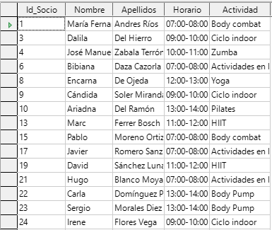
Guardar la consulta como consulta_15.
4.3 - Entrega de la tarea
Condiciones de entrega de la tarea
- Guardar el documento con RA4-CEdg-NombreApellidos en formato odb, formato nativo de LibreOffice Base.
- No se aceptará ningun formato que no sea odb.
- Subir la base de datos, a la tarea RA4-CEdg de Aules.
- A partir de momento de apertura de la tarea, dispondréis de 14 días para subir vuestros trabajos. Pasado ese tiempo la tarea se cerrará y ya no será posible subir vuestros ejercicios.
5 - Tarea RA4-CEf Informes
Para esta tarea, deberéis recuperar la base de datos creada en la tarea RA4-CEdg
Los informes son objetos de base de datos que permiten presentar los datos de forma organizada y lista para imprimir o exportar. Se basan en la información de tablas o consultas y muestran los datos con un formato definido. Cada vez que se ejecutan, reflejan el estado actual de la base de datos.
5.1 - Creación de una informe con el asistente
- Eligimos la opción Crear informe en modo de diseño... y seleccionamos la tabla (o consulta) que usaremos para crear el informe.
- Elegimos los campos que queremos mostrar en el informe.
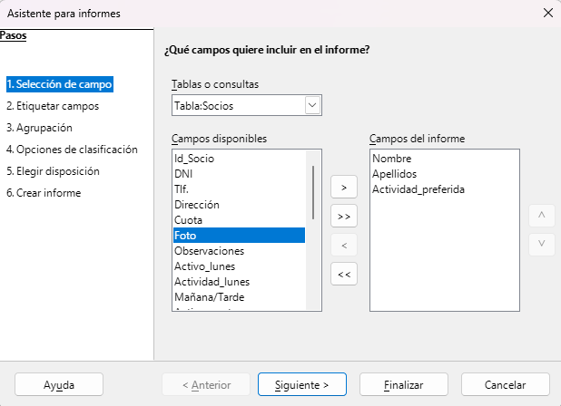
- Etiquetamos los campos para que el informe sea más legible.
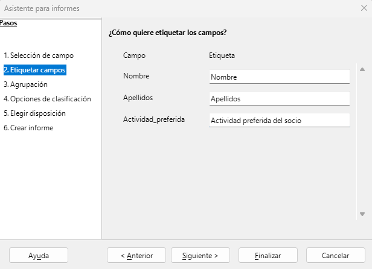
- Elegimos el o los campos por los que queremos agrupar la información.
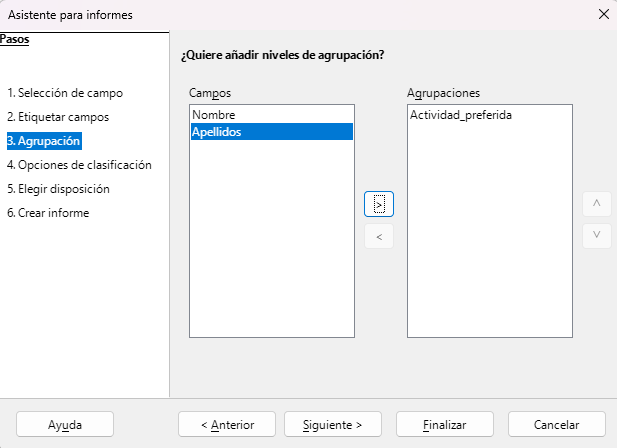
- Elegimos los otros campos por los que queremos ordenar la información.
- Elegir la disposición de los campos dentro del informe.
- Para finalizar damos un nombre al informe y ya podemos trabajar con él para darle el formato que queramos.
En este caso, el informe se actualizará cada vez que se ejecute, mostrando el estado actual de la base de datos (informe dinámico). El informe generado es un documento independiente de la base de datos, por lo que se puede modificar su formato sin afectar a la base de datos.
Guardar el informe con informe_1.
5.2 - Trabajo a realizar
El informe que crearemos se propone listar las actividades que realizarán los socios el martes por la tarde.
En este caso el no se hará sobre una tabla, sino sobre una consulta. Por lo tanto, antes de crear el informe, es necesario crear la consulta que devuelva los datos necesarios para el informe.
- Crear una consulta que devuelva el nombre, apellidos y actividad de los socios que harán una actividad el martes por la tarde.
- Guardar la consulta como Consulta_informe.
- Ejemplo de resultado de la consulta
- Crear un informe que muestre la información de la consulta anterior.
- Guardar el informe como Consulta_informe.
- Ejemplo de resultado del informe
5.3 - Entrega de la tarea
Condiciones de entrega de la tarea
- Guardar el documento con RA4-CEf-NombreApellidos en formato odb, formato nativo de LibreOffice Base.
- No se aceptará ningun formato que no sea odb.
- Subir la base de datos, a la tarea RA4-CEf de Aules.
- A partir de momento de apertura de la tarea, dispondréis de 14 días para subir vuestros trabajos. Pasado ese tiempo la tarea se cerrará y ya no será posible subir vuestros ejercicios.
6 - Tarea RA4-CEh Macros
Las macros son secuencias de comandos que permiten automatizar tareas repetitivas o complejas dentro de una base de datos. En LibreOffice Base, las macros se pueden crear utilizando el lenguaje de programación LibreOffice Basic o utilizando otros lenguajes compatibles como Python o JavaScript. Las macros pueden ser utilizadas para realizar una amplia variedad de tareas, como:
- Automatizar la entrada de datos.
- Realizar cálculos complejos.
- Generar informes personalizados.
- Interactuar con otras aplicaciones de LibreOffice, como Writer o Calc.
- Aportar funcionalidades adicionales a los formularios, como mejorar la interacción con los campos...
- ... y muchas más.
6.1 - Guardar las macros en la base de datos
- Para ello iremos a Herramientas → Macros → Organizar macros → Basic.
-
Una vez abierto el cuadro de diálogo vamos a nuestro archivo, seleccionamos Standard, pulsamos Nuevo y damos un nombre al módulo que contendrá nuestras macros.
-
Copiamos el siguiente código en el editor de macros:
'******** MACRO ABRIR EL FORMULARIO SOCIOS_ACTIVIDADES AL ABRIRSE LA BBDD *********
Sub AbrirFormInicio(oEvento As Object)
On Error Resume Next
Dim Control as Object
Control = ThisDatabaseDocument.CurrentController
If Not Control.IsConnected Then Control.Connect
ThisDatabaseDocument.FormDocuments.GetByName("Socios_Actividades").Open
End Sub
'******** MACRO PARA ESTABLECER LA VISIBILIDAD DE CAMPOS DE ACTIVIDADES *********
Sub ControlarVisibilidad(oEvento As Object)
Dim oControl As Object
Dim oFormulario As Object
Dim oLabelModelo As Object
Dim oCuadroModelo As Object
Dim oLabelControl As Object
Dim oCuadroControl As Object
Dim nombreCheckbox As String
Dim num As String
' Control que disparó el evento
oControl = oEvento.Source
' Formulario
oFormulario = oControl.Model.Parent
' Nombre del checkbox
nombreCheckbox = oControl.Model.Name
' Extraer número del checkbox (1,2,3...)
num = Right(nombreCheckbox,1)
' Obtener modelos de los controles
oLabelModelo = oFormulario.getByName("label" & num)
oCuadroModelo = oFormulario.getByName("Cuadro_combinado_" & num)
' Obtener controles visibles
oLabelControl = ThisComponent.CurrentController.getControl(oLabelModelo)
oCuadroControl = ThisComponent.CurrentController.getControl(oCuadroModelo)
' Mostrar u ocultar
oLabelControl.Visible = (oControl.State = 1)
oCuadroControl.Visible = (oControl.State = 1)
End Sub
'******** MACRO PARA ACTUALIZAR LA VISIBILIDAD DE CAMPOS DE ACTIVIDADES DESPUES DE CAMBIOS *********
Sub ActualizarVisibilidadRegistros(oEvento As Object)
'MsgBox "ha funcionado"
Dim oFormulario As Object
Dim i As Integer
Dim oCheckbox As Object
Dim oLabelModelo As Object
Dim oCuadroModelo As Object
Dim oLabelControl As Object
Dim oCuadroControl As Object
'oFormulario = oEvento.Source
oFormulario = oEvento.Source.Model.Parent
For i = 1 To 5
oCheckbox = oFormulario.getByName("Casilla_" & i)
oLabelModelo = oFormulario.getByName("label" & i)
oCuadroModelo = oFormulario.getByName("Cuadro_combinado_" & i)
oLabelControl = ThisComponent.CurrentController.getControl(oLabelModelo)
oCuadroControl = ThisComponent.CurrentController.getControl(oCuadroModelo)
oLabelControl.Visible = (oCheckbox.State = 1)
oCuadroControl.Visible = (oCheckbox.State = 1)
Next i
End Sub
'******** MACRO PARA CAMBIAR DE REGISTROS DESDE UN BOTON *********
Sub IrARegistro(oEvent)
Dim oForm As Object
Dim oBarra As Object
Dim posicion As Long
Dim i As Long
oBarra = oEvent.Source.Model
posicion = oBarra.ScrollValue
oForm = oEvent.Source.Model.Parent
oForm.First
For i = 1 To posicion
oForm.Next
Next i
oBarra = oForm.getByName("barraRegistros")
oBarra.ScrollValueMax = oForm.RowCount - 1
End Sub
'************ MACRO PARA ESTABLECER LA PANTALLA COMPLETA *************
Sub PantallaCompleta(Evento As Object)'Evento al cargar
On Error Resume Next
Dim oFrame As Object
Dim oDispatchHelper
oFrame=Evento.Source.Parent.Parent.CurrentController.Frame
oDispatchHelper=CreateUnoService("com.sun.star.frame.DispatchHelper")
oDispatchHelper.ExecuteDispatch(oFrame,".uno:FullScreen","",0,Array())
Dim Allowed As Variant
Dim Layout As Object
Dim I As Integer
Dim strURL As String
If IsMissing(Allowed) Or Not IsArray(Allowed) Then Allowed=Array()
BubbleSort(Allowed)'llamada a la funcion BubbleShort
oFrame = ThisComponent.CurrentController.Frame
Layout=oFrame.LayoutManager
For I=0 To UBound(Layout.Elements)
strURL=Layout.Elements(I).ResourceURL
If BinSearch(strURL,Allowed)>=0 Then 'llamada a la funcion BinSearch
Layout.showElement(strURL)
Else
Layout.hideElement(strURL)
End If
Next I
End Sub
- Una vez guardadas, las macros deberan aparecer de la siguiente manera.
6.2 - Asignar eventos al checkbox (casilla) del formulario
-
En esta sección, asignaremos el evento ControlarVisibilidad a cada una de las casillas del formulario Socios_Actividades para que, al marcar o desmarcar cada casilla, se muestre u oculte el cuadro combinado correspondiente a la actividad del día.
-
Tendremos que controlar el nombre de cada casilla para que el evento sepa qué cuadro combinado mostrar u ocultar. Por ejemplo, la casilla del lunes tendrá el nombre Casilla_1, la del martes Casilla_2 y así sucesivamente.
-
También tendremos que controlar el nombre de los cuadros combinados para que la macro se ejecute correctamente.
-
Para finalizar, también revisaremos el nombre de las etiquetas de los cuadros combinados.
6.3 - Colocar una barra de desplazamiento y asignarle un evento
-
Colocamos una barra de desplazamiento con el nombre barraRegistros.
-
Asignaremos las macros IrARegistro y ActualizarVisibilidadRegistros a los eventos como se puede ver en la siguiente imagen.
6.4 - Colocar un botón Guardar y nuevo Socio
-
Colocaremos un botón de guardar y le asignaremos la acción Guardar registro.
-
Seguidamente colocaremos el botón de nuevo socio asignándole la acción Registro nuevo.
6.5 - Asignar eventos al formulario
En este apartado visualizaremos el formulario a pantalla completa sin ningún menú de LibreOffice Base.
-
Ir a Formulario → Propiedades de formulario.
-
En eventos asignar las macros a los eventos con se indican en la imagen.
6.6 - Lanzar formulario al abrir la base de datos
Lo que haremos aquí es lanzar la macro AbrirFormInicio cuando abrimos nuestra base de datos.
- Vamos a Herramientas → Personalizar.
- Asignamos la macro AbrirFormInicio al evento Abrir documento.
6.7 - Entrega de la tarea
Condiciones de entrega de la tarea
- Guardar el documento con RA4-CEh-NombreApellidos en formato odb, formato nativo de LibreOffice Base.
- No se aceptará ningun formato que no sea odb.
- Subir la base de datos, a la tarea RA4-CEf de Aules.
- A partir de momento de apertura de la tarea, dispondréis de 14 días para subir vuestros trabajos. Pasado ese tiempo la tarea se cerrará y ya no será posible subir vuestros ejercicios.
7 - Tarea RA4-CEb Base de datos completa
En esta tarea usaremos los conocimientos adquiridos para crear una base de datos desde cero. Deberéis importar las tablas, decidir el tipo de datos de los campos de las diversas tablas, crear las relaciones entre tablas así como los formularios y las consultas.
Para el ejemplo, la base de datos recrea una empresa que se dedica a la venta de productos alimentarios. La base de datos de la tarea controla los siguientes datos:
- Datos personales del equipo de vendedores.
- Listado de todos los productos a la venta así como el precio por kg.
- Grupo o categoría dentro de la que entran los diferentes productos a la venta.
- Ventas desglosadas por vendedores, día, producto y cantidad de producto vendido.
7.1 - Importar las tablas
Trabajo a realizar
- Descargar los datos desde el siguiente enlace
- En este punto de la tarea, deberéis importar las 4 hojas, decidir el tipo de datos para cada campo, la clave primaria de cada tabla y las relaciones entre tablas.
7.2 - Formularios
En este apartado se os pedirá, definir un formulario basado sobre la tabla Ventas que permita introducir nuevos registros de las ventas del equipo de comerciales.
Trabajo a realizar, parte 1
- Crear un formulario basado sobre la tabla Ventas.
Aspecto del formulario, antes de aplicar estilos y modificar los campos Producto y Vendedor.
- Como podemos ver en la tabla Ventas, no tenemos acceso a los valores esplicitos de los vendedores, ni de los productos, sino a los identificadores id_vendedor e id_producto.
Por lo tanto, el formulario mostrará los valores id de vendedor y id de producto en vez de los valores esperados. - Para solucionar ese problema usaremos cuadros de lista que se encargarán de mostrar los valores de las tablas relacionadas Vendedores y Productos.
Ejemplo de cuadro de lista para el campo producto
- Elegimos la tabla Productos ya que esa tabla contiene los valores del campo Producto.
- Elegimos el campo de visualización.
- Elegimos la correspondencia entre el campo de la tabla relacionada y el campo de la tabla sobre la que se basa el formulario.
- Si todo ha ido bien, el campo id_producto se mostrará como un cuadro de lista con los valores de la tabla productos.
Trabajo a realizar, parte 2
- Modificar los 2 campos id_vendedor e id_producto con cuadros de lista para que el usuario pueda elegir el vendedor y el producto por su nombre y no por su identificación
- Mejorar el aspecto visual del formulario (opcional).
- Añadir un botón de guardar y otro de crear un registro nuevo.
- Aspecto del formulario, después de aplicar estilos, añadir los cuadros de lista para los campos Producto y Vendedor y añadir los botones.
7.3 - Consultas
Realizar las siguientes consultas:
Consulta 1
- Realizar una consulta que devuelva las ventas de cada vendedor.
- Ejemplo de resultado
- Guardar el informe como Consulta1.
Consulta 2
- Realizar una consulta que devuelva las ventas de cada producto desde el 05/3/26.
- Ejemplo de resultado
- Guardar el informe como Consulta2.
Consulta 3
- Realizar una consulta que devuelva las ventas totales de cada producto.
- Ejemplo de resultado
- Guardar el informe como Consulta3.
Consulta 4
- Realizar una consulta que devuelva el importe total de las ventas de cada producto.
- Ejemplo de resultado
- Guardar el informe como Consulta4.
Consulta 5
- Realizar una consulta que devuelva el importe total de las ventas.
- Ejemplo de resultado
- Guardar el informe como Consulta5.
7.4 - Entrega de la tarea
Condiciones de entrega de la tarea
- Guardar el documento con RA4-CEb-NombreApellidos en formato odb, formato nativo de LibreOffice Base.
- No se aceptará ningun formato que no sea odb.
- Subir la base de datos, a la tarea RA4-CEb de Aules.
- A partir de momento de apertura de la tarea, dispondréis de 14 días para subir vuestros trabajos. Pasado ese tiempo la tarea se cerrará y ya no será posible subir vuestros ejercicios.
| Licencia Creative Commons: | |
|---|---|
 |
Reconocimiento-NoComercial-CompartirIgual CC BY-NC-SA: No se permite un uso comercial de la obra original ni de las posibles obras derivadas, la distribución de la cuales se debe hace con una licencia igual a la que regula la obra original. |